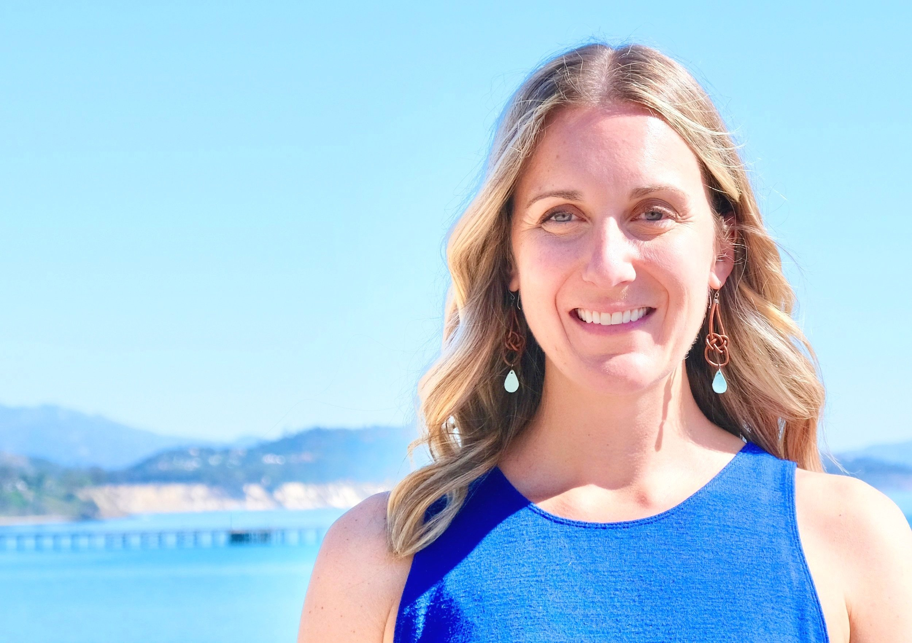

Julia is a boundary-spanning scientist passionate about identifying and advocating for effective ocean policy. Julia completed her Ph.D. research at the University of California, Santa Barbara’s Bren School of Environmental Science & Management under the supervision of Dr. Steve Gaines.
Julia is passionate about effective ocean conservation policy. She applies novel methods to identify successful conservation interventions and advocates for new approaches where previous policies have failed. Nothing thrills Julia more than to see decision-makers advance science-backed policies and approaches that are new and promising. Thus, much of her research is designed with policymakers and practitioners in mind.
Julia obtained her PhD from the Bren School of Environmental Science & Management at the University of California, Santa Barbara, where she focused on measuring and designing effective environmental policy. Julia holds a Master of Science from the University of British Columbia Institute for the Oceans and Fisheries, where she completed her research under the supervision of Dr. Amanda Vincent. She conducted her field research in peninsular Malaysia in collaboration with researchers from the University of Malaya. Following the completion of her MS, Julia worked under the supervision of Dr. Nick Dulvy as the Programme Officer for the IUCN Species Survival Commission Shark Specialist Group.
Julia also holds a Bachelor of Science degree from Dalhousie University. During her time at Dalhousie, she interned at the Bermuda Institute of Ocean Sciences where she completed her honours research in coral reef reproduction and recruitment under the supervision of Dr. Samantha de Putron. After graduating she went on to work as a research assistant in the Bahamas looking at invasive lionfish, she analyzed ancient deep-sea sponges on the Flemish Cap with the Canadian Department of Fisheries and Oceans, and she worked on Heron Island in Australia where she assisted a University of Queensland Ph.D. student in examining surgeonfish grazing impacts.